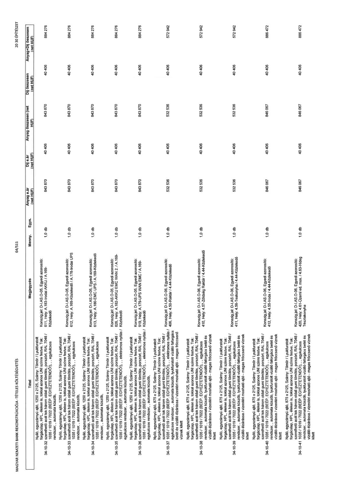

| Tétel | Megjegyzés | Menny. | Egys. | Anyag e.ár (net HUF) | Díj e.ár (net HUF) | Anyag összesen (net HUF) | Díj összesen (net HUF) | Anyag+Díj összesen (net HUF) |
|---|---|---|---|---|---|---|---|---|
| 34-10-32 Nyíló, egyszárnyú ajtó, 1250 x 2125, Szárny: Tömör / Lyukfurtolt forgácslap, HPL éléken is, tokkal azonos UNI színre festve, Tok: szerelhető acél tok három oldali gumi tömítés, porszórt, RAL 7048 / 1035 / 1019 / 7022 (BÉÉP. EGYEZTETENDŐ!), , egykulcsos rendszer, , automata küszöb, | Konszign.jel: D-I.AS.O-05. Egyedi azonosító: 611, Hely: A.183-Irodai AKKU / A.169- Közlekedő | 1,0 | db | 843 870 | 40 406 | 843 870 | 40 406 | 884 276 |
| 34-10-33 Nyíló, egyszárnyú ajtó, 1250 x 2125, Szárny: Tömör / Lyukfurtolt forgácslap, HPL éléken is, tokkal azonos UNI színre festve, Tok: szerelhető acél tok három oldali gumi tömítés, porszórt, RAL 7048 / 1035 / 1019 / 7022 (BÉÉP. EGYEZTETENDŐ!), , egykulcsos rendszer, , automata küszöb, | Konszign.jel: D-I.AS.O-05. Egyedi azonosító: 612, Hely: A.169-Közlekedő / A.178-Irodai UPS | 1,0 | db | 843 870 | 40 406 | 843 870 | 40 406 | 884 276 |
| 34-10-34 Nyíló, egyszárnyú ajtó, 1250 x 2125, Szárny: Tömör / Lyukfurtolt forgácslap, HPL éléken is, tokkal azonos UNI színre festve, Tok: szerelhető acél tok három oldali gumi tömítés, porszórt, RAL 7048 / 1035 / 1019 / 7022 (BÉÉP. EGYEZTETENDŐ!), , egykulcsos rendszer, , automata küszöb, | Konszign.jel: D-I.AS.O-05. Egyedi azonosító: 613, Hely: A.180-EMC UPS / A.169-Közlekedő | 1,0 | db | 843 870 | 40 406 | 843 870 | 40 406 | 884 276 |
| 34-10-35 Nyíló, egyszárnyú ajtó, 1250 x 2125, Szárny: Tömör / Lyukfurtolt forgácslap, HPL éléken is, tokkal azonos UNI színre festve, Tok: szerelhető acél tok három oldali gumi tömítés, porszórt, RAL 7048 / 1035 / 1019 / 7022 (BÉÉP. EGYEZTETENDŐ!), , elektromos nyitás / egykulcsos rendszer, , automata küszöb, | Konszign.jel: D-I.AS.O-05. Egyedi azonosító: 826, Hely: A.182-AKKU EMC WAN 2. / A.169- Közlekedő | 1,0 | db | 843 870 | 40 406 | 843 870 | 40 406 | 884 276 |
| 34-10-36 Nyíló, egyszárnyú ajtó, 1250 x 2125, Szárny: Tömör / Lyukfurtolt forgácslap, HPL éléken is, tokkal azonos UNI színre festve, Tok: szerelhető acél tok három oldali gumi tömítés, porszórt, RAL 7048 / 1035 / 1019 / 7022 (BÉÉP. EGYEZTETENDŐ!), , elektromos nyitás / egykulcsos rendszer, , automata küszöb, | Konszign.jel: D-I.AS.O-05. Egyedi azonosító: 919, Hely: A.179-UPS WAN EMC / A.169- Közlekedő | 1,0 | db | 843 870 | 40 406 | 843 870 | 40 406 | 884 276 |
| 34-10-37 Nyíló, egyszárnyú ajtó, 875 x 2125, Szárny: Tömör / Lyukfurtolt forgácslap, HPL éléken is, tokkal azonos UNI színre festve, Tok: szerelhető acél tok három oldali gumi tömítés, porszórt, RAL 7048 / 1035 / 1019 / 7022 (BÉÉP. EGYEZTETENDŐ!), , elektromos nyitás / egykulcsos rendszer, , automata küszöb, lyukfuratolt vízálló faforgács betét és vízálló elzárássa / vizesvári mosható ajtó - magas fröccsenő víznek kitett | Konszign.jel: D-I.AS.O-06. Egyedi azonosító: 406, Hely: 4.50-Raktár / 4.44-Közlekedő | 1,0 | db | 532 536 | 40 406 | 532 536 | 40 406 | 572 942 |
| 34-10-38 Nyíló, egyszárnyú ajtó, 875 x 2125, Szárny: Tömör / Lyukfurtolt forgácslap, HPL éléken is, tokkal azonos UNI színre festve, Tok: szerelhető acél tok három oldali gumi tömítés, porszórt, RAL 7048 / 1035 / 1019 / 7022 (BÉÉP. EGYEZTETENDŐ!), , egykulcsos rendszer, , automata küszöb, lyukfuratolt vízálló faforgács betét és vízálló elzárássa / vizesvári mosható ajtó - magas fröccsenő víznek kitett | Konszign.jel: D-I.AS.O-06. Egyedi azonosító: 410, Hely: 4.57-Zöldség Raktár / 4.44-Közlekedő | 1,0 | db | 532 536 | 40 406 | 532 536 | 40 406 | 572 942 |
| 34-10-39 Nyíló, egyszárnyú ajtó, 875 x 2125, Szárny: Tömör / Lyukfurtolt forgácslap, HPL éléken is, tokkal azonos UNI színre festve, Tok: szerelhető acél tok három oldali gumi tömítés, porszórt, RAL 7048 / 1035 / 1019 / 7022 (BÉÉP. EGYEZTETENDŐ!), , egykulcsos rendszer, , automata küszöb, lyukfuratolt vízálló faforgács betét és vízálló elzárássa / vizesvári mosható ajtó - magas fröccsenő víznek kitett | Konszign.jel: D-I.AS.O-06. Egyedi azonosító: 411, Hely: 4.56-Teakonyha / 4.44-Közlekedő | 1,0 | db | 532 536 | 40 406 | 532 536 | 40 406 | 572 942 |
| 34-10-40 Nyíló, egyszárnyú ajtó, 875 x 2125, Szárny: Tömör / Lyukfurtolt forgácslap, HPL éléken is, tokkal azonos UNI színre festve, Tok: szerelhető acél tok három oldali gumi tömítés, porszórt, RAL 7048 / 1035 / 1019 / 7022 (BÉÉP. EGYEZTETENDŐ!), , egykulcsos rendszer, , automata küszöb, lyukfuratolt vízálló faforgács betét és vízálló elzárássa / vizesvári mosható ajtó - magas fröccsenő víznek kitett | Konszign.jel: D-I.AS.O-06. Egyedi azonosító: 412, Hely: 4.55-Iroda / 4.44-Közlekedő | 1,0 | db | 846 067 | 40 406 | 846 067 | 40 406 | 886 472 |
| 34-10-41 Nyíló, egyszárnyú ajtó, 875 x 2125, Szárny: Tömör / Lyukfurtolt forgácslap, HPL éléken is, tokkal azonos UNI színre festve, Tok: szerelhető acél tok három oldali gumi tömítés, porszórt, RAL 7048 / 1035 / 1019 / 7022 (BÉÉP. EGYEZTETENDŐ!), , egykulcsos rendszer, , automata küszöb, lyukfuratolt vízálló faforgács betét és vízálló elzárássa / vizesvári mosható ajtó - magas fröccsenő víznek kitett | Konszign.jel: D-I.AS.O-06. Egyedi azonosító: 420, Hely: 4.61-Üzemi ed. mos. / 4.63-Hideg Tésztakonyha | 1,0 | db | 846 067 | 40 406 | 846 067 | 40 406 | 886 472 |
